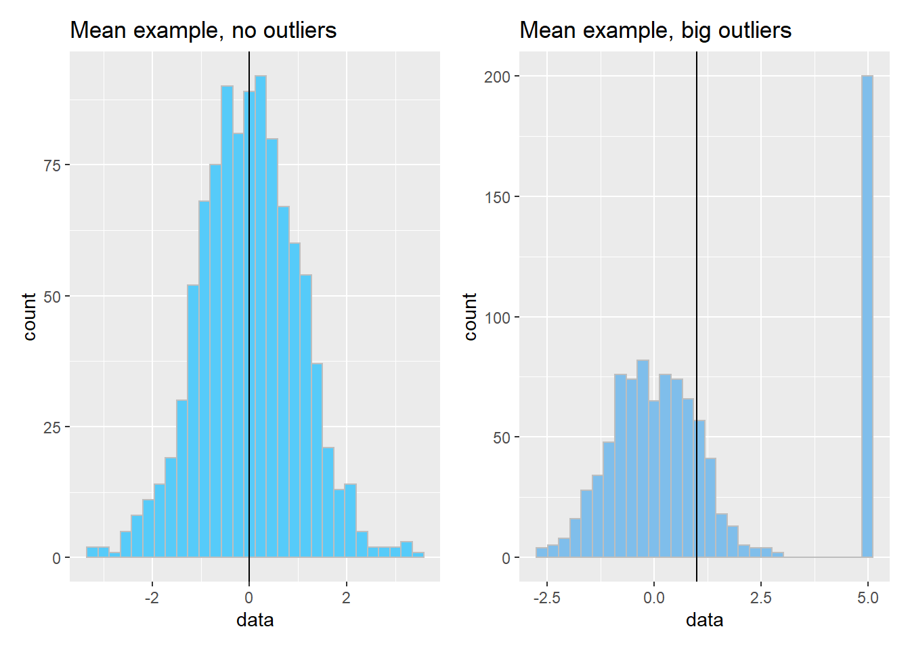
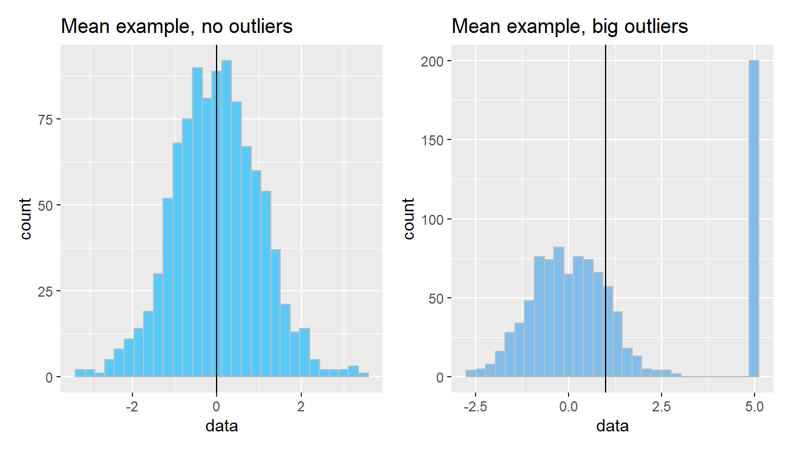

6.1 Data Modeling
The goal of data modeling is to describe a dataset using a relatively small number of mathematical relationships. Said differently, a model uses some parts of a dataset to try to accurately predict other parts of the dataset in a way that is useful to us.
Models are human inventions; they reflect our beliefs about the way the universe works. The successful model identifies patterns within a dataset that are the result of causal relationships in the universe that led to the phenomena that were measured while accounting for noise in the data. However, the model itself does not identify or even accurately reflect those causal effects. The model merely summarizes patterns and we as scientists are left to interpret those patterns and design follow up experiments to investigate the nature of those causal relationships using our prior knowledge of the world.
There are several principles to keep in mind when modeling data:
Data are never wrong. All data are collected using processes and devices designed and implemented by humans, who always have biases and make assumptions. All data measure something about the universe, and so are “true” in some sense of the word. If what we intended to measure and what we actually measured were not the same thing, that is due to our errors in collection or interpretation, not due to the data being wrong. If we approach our dataset with a particular set of hypotheses and the data don’t support those hypotheses, it is our beliefs of the world and our understanding of the dataset that are wrong, not the data itself.
Not all data are useful. Just because data isn’t wrong, it doesn’t mean it is useful. There may have been systematic errors in the collection of the data that makes interpreting them difficult. Data collected for one purpose may not be useful for any other purposes. And sometimes, a dataset collected for a particular purpose may simply not have the information needed to answer our questions; if what we measure has no relationship to what we wish to predict, the data itself is not useful - though the knowledge that what we measured has no detectable effect on the thing we wish to predict may be very useful!
“All models are wrong, but some are useful.” George Box, the renowned British statistician, famously asserted this in a 1976 paper to the Journal of the American Statistical Association. (Box 1976). By this he meant that every model we create is a simplification of the system we are seeking to model, which is by definition not identical to that system. To perfectly model a system, our model would need to be precisely the system we are modeling, which is no longer a model but the system itself. Fortunately, even though we know our models are always wrong to some degree, they may nonetheless be useful because they are not too wrong. Some models may indeed be too wrong, though.
Data do not contain causal information. “Correlation does not mean causation.” Data are measurements of the results of a process in the universe that we wish to understand; the data are possibly reflective of that process, but do not contain any information about the process itself. We cannot infer causal relationships from a dataset alone. We must construct possible causal models using our knowledge of the world first, then apply our data to our model and other alternative models to compare their relative plausibility.
All data have noise. The usefulness of a model to describe a dataset is related to the relative strength of the patterns and noise in the dataset when viewed through the lens of the model; conceptually, the so-called “signal to noise ratio” of the data. The fundamental concern of statistics is quantifying uncertainty (i.e. noise), and separating it from real signal, though different statistical approaches (e.g. frequentist vs Bayesian) reason about uncertainty in different ways.
Modeling begins (or should begin) with posing one or more scientific models of the process or phenomenon we wish to understand. The scientific model is conceptual; it reflects our belief of the universe and proposes a causal explanation for the phenomenon. We then decide how to map that scientific model onto a statistical model, which is a mechanical procedure that quantifies how well our scientific model explains a dataset. The scientific model and statistical model are related but independent choices we make. There may be many valid statistical models that represent a given scientific model. However, sometimes in practice we lack sufficient knowledge about the process to propose scientific models first, requiring data exploration and summarization first to suggest reasonable starting points.
This section pertains primarily to models specified explicitly by humans. There is another class of models, namely those created by certain machine learning algorithms like neural networks and deep learning, that discover models from data. These models are fundamentally different than those designed by human minds, in that they are often accurate and therefore useful, but it can be very difficult if not impossible to understand how they work. While these are important types of models that fall under the umbrella of data science, we limit the content of this chapter to human designed statistical models.
6.1.1 A Worked Modeling Example
As an example, let’s consider a scenario where we wish to assess whether any of three genes can help us distinguish between patients who have Parkinson’s Disease and those who don’t by measuring the relative activity of those genes in blood samples. We have the following made-up dataset:
gene_exp## # A tibble: 200 x 5
## sample_name `Disease Status` `Gene 1` `Gene 2` `Gene 3`
## <chr> <fct> <dbl> <dbl> <dbl>
## 1 P1 Parkinson's 257. 636. 504.
## 2 P2 Parkinson's 241. 556. 484.
## 3 P3 Parkinson's 252. 426. 476.
## 4 P4 Parkinson's 271. 405. 458.
## 5 P5 Parkinson's 248. 482. 520.
## 6 P6 Parkinson's 275. 521. 460.
## 7 P7 Parkinson's 264. 415. 568.
## 8 P8 Parkinson's 276. 450. 495.
## 9 P9 Parkinson's 274. 490. 496.
## 10 P10 Parkinson's 251. 584. 573.
## # ... with 190 more rowsOur imaginary dataset has 100 Parkinson’s and 100 control subjects. For each of
our samples, we have a sample ID, Disease Status of Parkinson's or Control,
and numeric measurements of each of three genes. Below are violin
plots of our (made-up) data set for these three genes:

By inspection, it appears that Gene 1 has no relationship with disease; we may safely eliminate this gene from further consideration. Gene 2 appears to have a different profile depending on disease status, where control individuals have a higher average expression and a lower variance. Unfortunately, despite this qualitative difference, this gene may not be useful for telling whether someone has disease or not - the ranges completely overlap. Gene 3 appears to discriminate between disease and control. There is some overlap in the two expression distributions, but above a certain expression value these data suggest a high degree of predictive accuracy may be obtained with this gene. Measuring this gene may therefore be useful, if the results from this dataset generalize to all people with Parkinson’s Disease.
So far, we have not done any modeling, but instead relied on plotting and our eyes. A more quantitative question might be: how much higher is Gene 3 expression in Parkinson’s Disease than control? Another way of posing this question is: if I know a patient has Parkinson’s Disease, what Gene 3 expression value do I expect them to have? Written this way, we have turned our question into a prediction problem: if we only had information that a patient had Parkinson’s Disease, what is the predicted expression value of their Gene 3?
Another way to pose this prediction question is in the opposite (and arguably more useful) direction: if all we knew about a person was their Gene 3 gene expression, how likely is it that the person has Parkinson’s Disease? If this gene expression is predictive enough of a person’s disease status, it may be a viable biomarker of disease and thus might be useful in a clinical setting, for example when identifying presymptomatic individuals or assessing the efficacy of a pharmacological treatment.
Although it may seems obvious, before beginning to model a dataset, we must start by posing the scientific question as concisely as possible, as we have done above. These questions will help us identify which modeling techniques are appropriate and help us ensure we interpret our results correctly.
We will use this example dataset throughout this chapter to illustrate some key concepts.
6.1.2 Data Summarization
Broadly speaking, data summarization is the process of finding a lower-dimensional representation of a larger dataset. There are many ways to summarize a set of data; each approach will emphasize different aspects of the dataset, and have varying degrees of accuracy. Consider the gene expression of Gene 1 for all individuals in our example above, plotted as a distribution with a histogram:
ggplot(gene_exp, aes(x=`Gene 1`)) +
geom_histogram(bins=30,fill="#a93c13")
6.1.2.1 Point Estimates
The data are concentrated around the value 250, and become less common for larger and smaller values. Since the extents to the left and right of the middle of the distribution appear to be equally distant, perhaps the arithmetic mean is a good way to identify the middle of the distribution:
ggplot(gene_exp, aes(x=`Gene 1`)) +
geom_histogram(bins=30,fill="#a93c13") +
geom_vline(xintercept=mean(gene_exp$`Gene 1`))
By eye, the mean does seem to correspond well to the value that is among the most frequent, and successfully captures an important aspect of the data: its central tendency. Summaries that compute a single number are called point estimates. Point estimates collapse the data into one singular point, one value.
The arithmetic mean is just one measure of central tendency, computed by taking the sum of all the values and dividing by the number of values. The mean may be a good point estimate of the central tendency of a dataset, but it is sensitive to outlier samples. Consider the following examples:
library(patchwork)
well_behaved_data <- tibble(data = rnorm(1000))
data_w_outliers <- tibble(data = c(rnorm(800), rep(5, 200))) # oops I add some outliers :^)
g_no_outlier <- ggplot(well_behaved_data, aes(x = data)) +
geom_histogram(fill = "#56CBF9", color = "grey", bins = 30) +
geom_vline(xintercept = mean(well_behaved_data$data)) +
ggtitle("Mean example, no outliers")
g_outlier <- ggplot(data_w_outliers, aes(x = data)) +
geom_histogram(fill = "#7FBEEB", color = "grey", bins = 30) +
geom_vline(xintercept = mean(data_w_outliers$data)) +
ggtitle("Mean example, big outliers")
g_no_outlier | g_outlier
The median is another measure of central tendency, which is found by identifying the value that divides the samples into equal halves when sorted from smallest to largest. The median is more robust in the presence of outliers.
g_no_outlier <- ggplot(well_behaved_data, aes(x = data)) +
geom_histogram(fill = "#AFBED1", color = "grey", bins = 30) +
geom_vline(xintercept = median(well_behaved_data$data)) +
ggtitle("Median example")
g_outlier <- ggplot(data_w_outliers, aes(x = data)) +
geom_histogram(fill = "#7FBEEB", color = "grey", bins = 30) +
geom_vline(xintercept = median(data_w_outliers$data)) +
ggtitle("Median example, big outliers")
g_no_outlier | g_outlier
6.1.2.2 Dispersion
Central tendencies are important aspects of the data but don’t describe what the data do for values outside this point estimate of central tendency; in other words, we have not expressed the spread, or dispersion of the data.
We decide that perhaps computing the standard deviation of the data may characterize the spread well, since it appears to be symmetric around the mean. We can layer this information on the plot as well to inspect it:
g1_mean <- mean(gene_exp$`Gene 1`)
g1_sd <- sd(gene_exp$`Gene 1`)
ggplot(gene_exp, aes(x=`Gene 1`)) +
geom_histogram(bins=30,fill="#a93c13") +
geom_vline(xintercept=g1_mean) +
geom_segment(x=g1_mean-g1_sd, y=10, xend=g1_mean+g1_sd, yend=10)
The width of the horizontal line is proportional to the mean +/- one standard
deviation around the mean, and has been placed arbitrarily on the y axis at y = 10 to show how this range covers the data in the histogram. The +/- 1 standard
deviation around the mean visually describes the spread of the data reasonably
well.
Measures the spread of the data, typically around its perceived center (a mean). Often related to the distribution of the data.
Standard deviation: A measure of how close values are to the mean. Bigger standard deviations mean data is more spread out.
data <- tibble(data = c(rnorm(1000, sd=1.75)))
ggplot(data, aes(x = data)) +
geom_histogram(fill = "#EAC5D8", color = "white", bins = 30) +
geom_vline(xintercept = c(-2, -1, 0, 1, 2) * sd(data$data)) +
xlim(c(-6, 6)) +
ggtitle("Standard deviations aplenty", paste("SD:", sd(data$data)))
Variance: Similar to SD (it’s the square of SD), variance measures how far a random value is from the mean.
data <- tibble(data = c(rnorm(1000, sd=0.5)))
ggplot(data, aes(x = data)) +
geom_histogram(fill = "#DBD8F0", color = "white", bins = 30) +
geom_vline(xintercept = mean(data$data)) +
xlim(c(-6, 6)) +
ggtitle("Same mean as SD plot, but different variance",
paste("Variance:", sd(data$data)))
6.1.2.3 Distributions
With these two pieces of knowledge - the mean accurately describes the center of
the data and the standard deviation describes the spread - we now recognize that
these data may be normally distributed, and therefore
we can potentially describe the dataset mathematically. We decide to visually
inspect this possibility by layering a normal distribution on top of our data
using
stat_function:
g1_mean <- mean(gene_exp$`Gene 1`)
g1_sd <- sd(gene_exp$`Gene 1`)
ggplot(gene_exp, aes(x=`Gene 1`)) +
geom_histogram(
aes(y=after_stat(density)),
bins=30,
fill="#a93c13"
) +
stat_function(fun=dnorm, args = list(mean=g1_mean, sd=g1_sd), size=2)
Note the histogram bars are scaled with
aes(y=[after_stat](https://ggplot2.tidyverse.org/reference/aes_eval.html)(density))
to the density of values in each bin to make all the bar heights sum to 1 so
that the y scale matches that of a normal distribution.
We have now created our first model: we chose to express the dataset as a normal distribution parameterized by the mean and standard deviation and standard deviation of the data. Using the values of 254 and 11 as our mean and standard deviation, respectively, we can express our model mathematically as follows:
\[ Gene\;1 \sim \mathcal{N}(254, 11) \]
Here the \(\sim\) symbol means “distributed as” and the \(\mathcal{N}(\mu,\sigma)\) represents a normal distribution with mean of \(\mu\) and standard deviation of \(\sigma\). This is mathematical formulation means the same thing as saying we are modeling Gene 1 expression as a normal distribution with mean of 254 and standard deviation of 11. Without any additional information about a new sample, we would expect the expression of that gene to be 254, although it may vary from this value.
The normal distribution is the most common distribution observed in nature, but it is hardly the only one. We could have proposed other distributions to instead summarize our data:
g_norm <- ggplot(tibble(data = rnorm(5000)), aes(x = data)) +
geom_histogram(fill = "#D0FCB3", bins = 50, color = "gray") +
ggtitle("Normal distribution", "rnorm(n = 1000)")
g_unif <- ggplot(tibble(data = runif(5000)), aes(x = data)) +
geom_histogram(fill = "#271F30", bins = 50, color = "white") +
ggtitle("Uniform distribution", "runif(n = 1000)")
g_logistic <- ggplot(tibble(data = rlogis(5000)), aes(x = data)) +
geom_histogram(fill = "#9BC59D", bins = 50, color = "black") +
ggtitle("Logistic distribution", "rlogis(n = 1000)")
g_exp <- ggplot(tibble(data = rexp(5000, rate = 1)), aes(x = data)) +
geom_histogram(fill = "#6C5A49", bins = 50, color = "white") +
ggtitle("Exponential distribution", "rexp(n = 1000, rate = 1)")
(g_norm | g_unif) / (g_logistic | g_exp) In addition to the normal distribution, we have also plotted samples drawn from
a continuous uniform
distribution
between 0 and 1, a logistic
distribution which is
similar to the normal distribution but has heavier “tails,” and an exponential
distribution.
There are many more distributions than these, and many of them were discovered
to arise in nature and encode different types of processes and relationships.
In addition to the normal distribution, we have also plotted samples drawn from
a continuous uniform
distribution
between 0 and 1, a logistic
distribution which is
similar to the normal distribution but has heavier “tails,” and an exponential
distribution.
There are many more distributions than these, and many of them were discovered
to arise in nature and encode different types of processes and relationships.
A few notes on our data modeling example before we move on:
Our model choice was totally subjective. We looked at the data and decided that a normal distribution was a reasonable choice. There were many other choices we could have made, and all of them would be equally valid, though they may not all describe the data equally well.
We can’t know if this is the “correct” model for the data. By eye, it appears to be a reasonably accurate summary. However, there is no such thing as a correct model; some models are simply better at describing the data than others. Recall that all models are wrong, and some models are useful. Our model may be useful, but it is definitely wrong to some extent.
We don’t know how well our model describes the data yet. So far we’ve only used our eyes to choose our model which might be a good starting point considering our data are so simple, but we have not yet quantified how well our model describes the data, or compared it to alternative models to see which is better. This will be discussed briefly in a later section.
6.1.3 Linear Models
Our choice of a normal distribution to model our Gene 1 gene expression was only descriptive; it was a low-dimensional summary of our dataset. However, it was not very informative; it doesn’t tell us anything useful about Gene 1 expression with respect to our scientific question of distinguishing between Parkinson’s Disease and Control individuals. To do that, we will need to find a model that can make predictions that we may find useful if we receive new data. To do that, we will introduce a new type of model: the linear model.
A linear model is any statistical model that relates one outcome variable as a linear combination (i.e. sum) of one or more explanatory variables. This may be expressed mathematically as follows:
\[ Y_i = \beta_0 + \beta_1 \phi_1 ( X_{i1} ) + \beta_2 \phi_2 ( X_{i2} ) + \ldots + \beta_p \phi_p ( X_{ip} ) + \epsilon_i \]
Above, \(Y_i\) is some outcome or response variable we wish to model, \(X_{ij}\) is our explanatory or predictor variable \(j\) for observatoin \(i\), and \(\beta_j\) are coefficients estimated to minimize the difference between the predicted outcome \(\hat{Y_i}\) and the observed \(Y_i\) over all observations. \(\phi_j\) is a possibly non-linear transformation of the explanatory variable \(X_ij\); note these functions may be non-linear so long as the predicted outcome is modeled as a linear combination of the transformed variables. The rest of this section is dedicated to a worked example of a linear model for gene expression data.
Let us begin with a beeswarm plot plot of Gene 3:
library(ggbeeswarm)
ggplot(gene_exp, aes(x=`Disease Status`, y=`Gene 3`, color=`Disease Status`)) +
geom_beeswarm()
The expression values within each disease status look like they might be normally distributed just like Gene 1, so let’s summarize each group with the arithmetic mean and standard deviation as before, and instead plot both distributions as histograms:
exp_summ <- pivot_longer(
gene_exp,
c(`Gene 3`)
) %>%
group_by(`Disease Status`) %>%
summarize(mean=mean(value),sd=sd(value))
pd_mean <- filter(exp_summ, `Disease Status` == "Parkinson's")$mean
c_mean <- filter(exp_summ, `Disease Status` == "Control")$mean
ggplot(gene_exp, aes(x=`Gene 3`, fill=`Disease Status`)) +
geom_histogram(bins=20, alpha=0.6,position="identity") +
annotate("segment", x=c_mean, xend=pd_mean, y=20, yend=20, arrow=arrow(ends="both", angle=90)) +
annotate("text", x=mean(c(c_mean,pd_mean)), y=21, hjust=0.5, label="How different?")
We can make a point estimate of this difference by simply subtracting the means:
pd_mean - c_mean## [1] 164.0942In other words, this point estimate suggests that on average Parkinson’s patients have 164.1 greater expression than Controls. We can plot this relationship relatively simply:
ggplot(gene_exp, aes(x=`Disease Status`, y=`Gene 3`, color=`Disease Status`)) +
geom_beeswarm() +
annotate("segment", x=0, xend=3, y=2*c_mean-pd_mean, yend=2*pd_mean-c_mean)
However, this point estimate tells us nothing about how confident we are about the difference. We can do this by using an linear regression by modeling Gene 3 as a function of disease status:
fit <- lm(`Gene 3` ~ `Disease Status`, data=gene_exp)
fit##
## Call:
## lm(formula = `Gene 3` ~ `Disease Status`, data = gene_exp)
##
## Coefficients:
## (Intercept) `Disease Status`Parkinson's
## 334.6 164.1The coefficient associated with having the disease status of Parkinson’s disease
is almost exactly equal to our difference in means. We also note that the
coefficient labeled (Intercept) is nearly equal to the mean of our control
samples (334.6). Under the hood, this simple linear model did the
same calculation we did by subtracting the means of each group but estimated the
means using all the data at once, instead of point estimates. Another advantage
of using lm() over the point estimate method is the model can estimate how
confident the model was that the difference in mean between Parkinson’s and
controls subjects. Let’s print some more information about the model than
before:
summary(fit)##
## Call:
## lm(formula = `Gene 3` ~ `Disease Status`, data = gene_exp)
##
## Residuals:
## Min 1Q Median 3Q Max
## -124.303 -25.758 -2.434 30.518 119.348
##
## Coefficients:
## Estimate Std. Error t value Pr(>|t|)
## (Intercept) 334.578 4.414 75.80 <2e-16 ***
## `Disease Status`Parkinson's 164.094 6.243 26.29 <2e-16 ***
## ---
## Signif. codes: 0 '***' 0.001 '**' 0.01 '*' 0.05 '.' 0.1 ' ' 1
##
## Residual standard error: 44.14 on 198 degrees of freedom
## Multiple R-squared: 0.7773, Adjusted R-squared: 0.7761
## F-statistic: 691 on 1 and 198 DF, p-value: < 2.2e-16We again see our coefficient estimates for the intercept (i.e. mean control
expression) and our increase in Parkinson’s, but also a number of other terms,
in particular Pr(>|t|) and Multiple R-squared. The former is the
p-value associated with each of the coefficient estimates, both of
which are very small, indicating to us that the model was very confident of the
estimated values. The latter, multiple R-squared or \(R^2\), describes how much of
the variance in the data was explained by the model it found as a fraction
between 0 and 1. This model explains 77.7% of the variance of the data, which is
substantial. The \(R^2\) value also has an associated p-value, which is also very
small. Overall, these statistics suggest this model fits the data very well.
We can plot the results of a linear model for each of our genes relatively easily:
pd_mean <- mean(filter(gene_exp,`Disease Status`=="Parkinson's")$`Gene 1`)
c_mean <- mean(filter(gene_exp,`Disease Status`=="Control")$`Gene 1`)
g1 <- ggplot(gene_exp, aes(x=`Disease Status`, y=`Gene 1`, color=`Disease Status`)) +
geom_beeswarm() +
annotate("segment", x=0, xend=3, y=2*c_mean-pd_mean, yend=2*pd_mean-c_mean) +
theme(legend.position="none")
pd_mean <- mean(filter(gene_exp,`Disease Status`=="Parkinson's")$`Gene 2`)
c_mean <- mean(filter(gene_exp,`Disease Status`=="Control")$`Gene 2`)
g2 <- ggplot(gene_exp, aes(x=`Disease Status`, y=`Gene 2`, color=`Disease Status`)) +
geom_beeswarm() +
annotate("segment", x=0, xend=3, y=2*c_mean-pd_mean, yend=2*pd_mean-c_mean) +
theme(legend.position="none")
pd_mean <- mean(filter(gene_exp,`Disease Status`=="Parkinson's")$`Gene 3`)
c_mean <- mean(filter(gene_exp,`Disease Status`=="Control")$`Gene 3`)
g3 <- ggplot(gene_exp, aes(x=`Disease Status`, y=`Gene 3`, color=`Disease Status`)) +
geom_beeswarm() +
annotate("segment", x=0, xend=3, y=2*c_mean-pd_mean, yend=2*pd_mean-c_mean) +
theme(legend.position="none")
g1 | g2 | g3
We can also compute the corresponding linear model fits, and confirm that the coefficients agree with the directions observed in the plot, as well as that all the associations are significant FDR < 0.05:
fit1 <- lm(`Gene 1` ~ `Disease Status`, data=gene_exp)
fit2 <- lm(`Gene 2` ~ `Disease Status`, data=gene_exp)
fit3 <- lm(`Gene 3` ~ `Disease Status`, data=gene_exp)
gene_stats <- bind_rows(
c("Gene 1",coefficients(fit1),summary(fit1)$coefficients[2,4]),
c("Gene 2",coefficients(fit2),summary(fit2)$coefficients[2,4]),
c("Gene 3",coefficients(fit3),summary(fit3)$coefficients[2,4])
)
colnames(gene_stats) <- c("Gene","Intercept","Parkinson's","pvalue")
gene_stats$padj <- p.adjust(gene_stats$pvalue,method="fdr")
gene_stats## # A tibble: 3 x 5
## Gene Intercept `Parkinson's` pvalue padj
## <chr> <chr> <chr> <chr> <dbl>
## 1 Gene 1 250.410735540151 6.95982194659045 3.92131170913765e-06 3.92e- 6
## 2 Gene 2 597.763814010886 -93.6291659250254 2.37368730897756e-13 3.56e-13
## 3 Gene 3 334.57788193953 164.094204856583 1.72774902843408e-66 5.18e-66We have just performed our first elementary differential expression analysis using a linear model. Specifically, we examined each of our genes for a statistical relationship with having Parkinson’s disease. The mechanics of this analysis are beyond the scope of this book, but later when we consider differential expression analysis packages in chapter 7 this pattern should be familiar after this example.
If you are familiar with logistic
regression, you might have
wondered why we didn’t model disease status, which is a binary variable, as a
function of gene expression like Disease Status ~ Gene 3. There are several
reasons for this, complete
separation principally
among them. In logistic regression, complete separation occurs when all the
predictor values (e.g. gene expression) for one outcome group are greater or
smaller than the other; i.e. there is no overlap in the values between groups.
This causes logistic regression to fail to converge, leaving these genes with no
statistics even though these genes are potentially the most interesting! There
are methods (e.g. Firth’s Logistic
Regression) that
overcome this problem, but methods that model gene expression as a function of
other outcome variables were developed first and remain the most popular.
6.1.4 Flavors of Linear Models
The linear model implemented above is termed linear regression due to the way it models the relationship between the predictor variables and the outcome. Specifically, linear regression makes some strong assumptions about that relationship that may not always hold for all datasets. To address this limitation, a more flexible class of linear models called generalized linear models that allow these assumptions to be relaxed by changing the mathematical relationship between the predictors and outcome using a link function, and/or by mathematically transforming the predictors themselves. Some of the more common generalized linear models are listed below:
- Logistic regression - models a binary outcome (e.g. disease vs control) as a linear combination of predictor variables by using the logistic function as the link function.
- Multinomial regression - models a multinomial (i.e. categorical variable with more than two categories) using a multinomial logit function link function
- Poisson regression - models an outcome variable that are count data as a linear combination of predictors using the logarithm as the link function; this model is commonly used when modeling certain types of high throughput sequencing data
- Negative binomial regression - also models an outcome variable that are count data but relaxes some of the assumptions of Poisson regression, namely the mean-variance equality constraint; negative binomial regression is commonly used to model gene expression estimated from RNASeq data.
Generalized linear models are very flexible, and there are many other types of these models used in biology and data science. It is important to be aware of the characteristics of the outcome you wish to model and choose the modeling method that is most suitable.